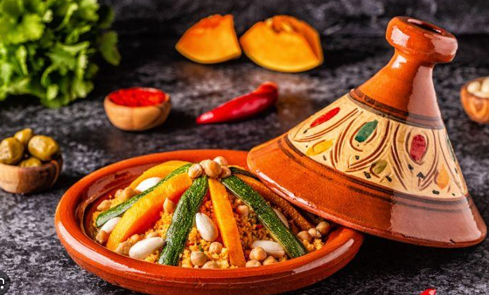
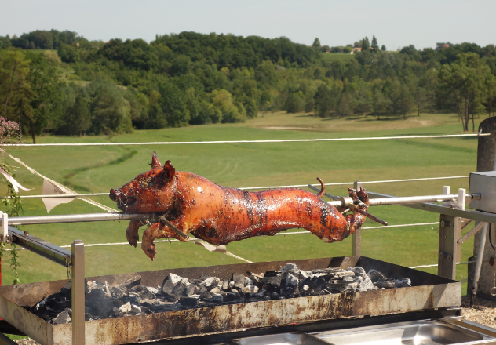
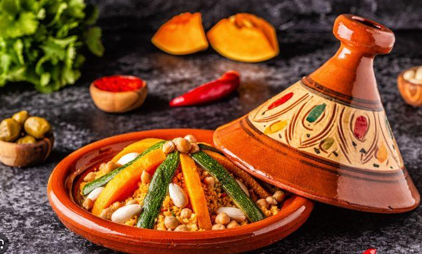
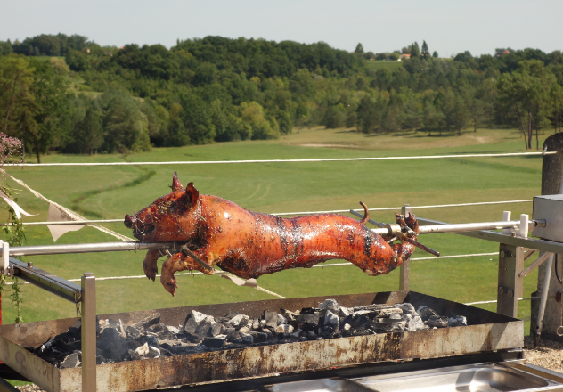

Marrakech, ubicada en Marruecos, es una joya cultural y culinaria. Su cocina fusiona influencias bereberes, árabes y francesas, creando sabores únicos. Destacados ingredientes incluyen cuscús, aceitunas, especias como el comino y la canela, y hierbas frescas. Tajines y couscous son platos emblemáticos. Las tradiciones culinarias reflejan la importancia de las comidas compartidas y la hospitalidad marroquí. Marrakech es conocida por sus vibrantes mercados (zocos), donde se encuentran exóticos productos locales. La experiencia gastronómica en Marrakech va más allá de la comida; es un viaje sensorial a través de la rica historia y la hospitalidad de Marruecos. Video Youtube
 


